Aquí algo de música mientras lees
Índice
Digital Extreme
Digital Extremes es una empresa canadiense desarrolladora de videojuegos fundada en 1993 por James Schmalz. Es conocida por su parte en la creación de la exitosa saga de juegos Unreal. La sede de Digital Extremes está actualmente ubicada en London, Ontario.
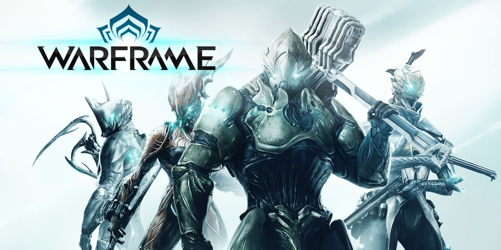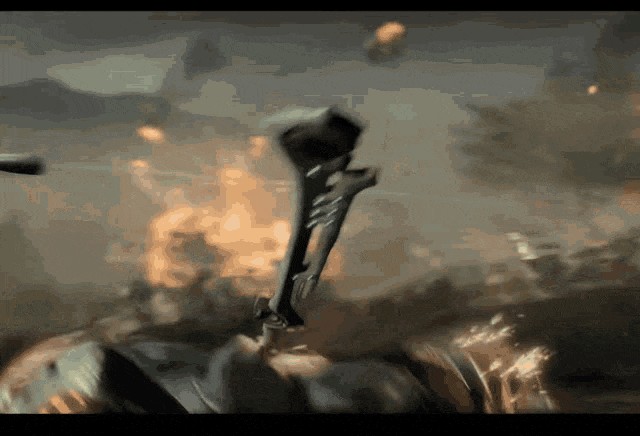
{kind=link}
Historia dentro del juego.
El nombre "Warframe" proviene de un proyecto de investigación propiedad de Boeing (Compañía) en 1950 para equipar a los soldados con exoesqueletos, como mencionó Steve Sinclair durante la Devstream.
Dark Sector: En la Tierra durante la guerra fría, los Estados Unidos inventó un virus llamado Technocyte. Permaneció sin usar y en gran parte no probado por varias décadas hasta que 'La Agencia' envió un submarino con cepa infectada a bordo a la isla soviética ficticia de Lasaria. Un miembro supuestamente pícaro de la Agencia llamado Robert Mezner, especialista en 'nanotecnología que se aplica a biomejora' fue enviado a Lasaria secreto a prueba y propagar el virus entre sus ciudadanos, pero no se tuvieron noticias de él, por lo que Otro agente de la Agencia llamado Hayden Tenno fue enviado a Lasaria a encontrar y, si es un traidor, matar a Mezner y fue atacado rápidamente por Némesis, esencialmente un Warframe prototipo hecho de Technocyte o una nanotecnología similar que parece una hibridacion entre Rhino y Nyx en Warframe y fue llevada por una mujer que trabaja con Mezner.
Nemesis infecta a Hayden con la misma cepa modificada del virus Technocyte que Mezner utiliza en sí mismo. En este punto, la mayor parte del juego de Dark Sector juega con su brazo infectado por la cepa. Hayden reaccionó de una forma unica para el virus, ya que sólo mutó su derecho brazo / hombro visiblemente así como el ganar la habilidad en su brazo de carne Technocyte orgánico, de generar un boomerang de 3 hojas llamado glaive Para otros seres humanos y animales, el dolor rápidamente los llevó a la locura y se transformaron en monstruos horribles con piezas de virus tecno-orgánico u organismos enteros.
Pero en su caso, la analgesia congénita de Hayden le hizo no sentir dolor, algo que era probable que fuera la razón que el virus no lo vuelve loco. Al final de la historia, Hayden adquirió otro prototipo Warframe (que utiliza el mismo modelo de personaje como Excalibur en Warframe), derrotaron a Némesis y a Mezner (que fue llevado a la locura por el virus) y sobrevivió a la Agencia. Aun así, el virus Technocyte terminó siendo liberado en el mundo, ya sea a través de los esfuerzos de Mezner o intencionalmente por la Agencia.
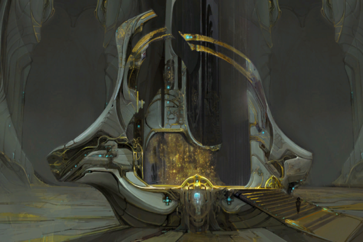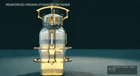
{kind=link}
La Era Orokin: Según la vaga información revelada por los desarrolladores, los Tenno se remontan a la gloriosa Era Orokin. Según se indica, los Orokin eran una raza humanoide superior física e intelectualmente, con capacidad de alargar su vida hasta límites no conocidos. Su dominio se expandió por todo el sistema origen, en cierto momento crearon un tipo de "máquina" capaz de terraformar planetas, llamados "conscientes" (Sentients), estos fueron creados con una característica especial, la cual les otorgaba resistencia a casi todas las formas de daño habidas y por haber.
Llegado el momento se les envió al sistema Tau Centauri para construir el raíl solar que les permitiese a los Orokin expandir su dominio más allá del sistema origen, donde quedaban varados sin la posibilidad de volver. Sin saber como, los Conscientes fueron capaces de retornar al sistema origen, con inteligencia propia pero perdiendo en el proceso la capacidad de reproducirse, declararon la guerra a los Orokin (sus antiguos creadores). Los Orokin, forzados a establecer lo que quedaba de ellos en el Vacío Orokin (Locación accesible en el juego) armaron a guerreros excepcionales con la espada, el arma de fuego, y las misteriosas armaduras Warframe.
Aquí entran los Tenno, un grupo de niños que experimentaron la radiación del vacío dando lugar a la aparición de poderes al canalizar esta energía (y otros efectos secundarios). Los Orokin decidieron aprovechar ese potencial y los "fusionaron" a los warframes.
-Tomamos a los pocos retorcidos infectados que había regresado de ese lugar. Construimos un marco alrededor de ellos, un conducto de sus tribulaciones. Les dio las armas de las viejas costumbres. La Pistola y la cuchilla. Un nuevo guerrero había nacido, nació un nuevo código. Estos rechazados, estos Tenno, se convirtieron en nuestros salvadores. Guerreros semi-Dioses emitidos en acero y la furia golpeando a nuestros enemigos de una manera que nunca podría comprender.-
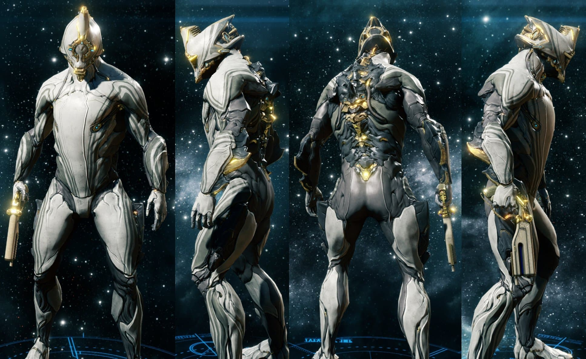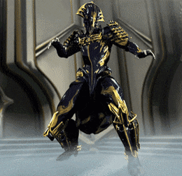
{kind=link}
Excalibur fue el primero.
- Archivos Orokin 'Warframe'
Los Warframes fueron creados a partir de los Tenno, Según la entrada del codice de Ember Prime los primeros fueron supervivientes del accidente de la nave Zariman Ten-Zero, la cual quedó a la deriva en el vacío, siendo los únicos supervivientes niños, los cuales podrían canalizar energía del vacío. como un último intento por los Orokin para combatir los Conscientes, se le encomendó a la Archimedian Margulis el trabajo de tratar a estos niños en el sector Lua, ubicado en la tierra. No obstante, los Orokin temían del poder de estos niños, ordenando en última instancia asesinarlos para evitar problemas en un futuro, Margulis, consciente de esto los defendió frente a "Los 7", El consejo de ejecutores, el cual no aceptó sus peticiones y fue ejecutada por defenderlos.
Según la entrada del Códice de Rhino Prime, los Orokin trataron a ciertos Tenno para experimentos en genética, como Valkyr, recluyéndolos en sitios especiales, la teoría de que los Orokin alteraron ciertas especies para asemejarlas a especies antiguas de la tierra se refuerza con la existencia de rayas del desierto en el planeta Fobos.
"Siete manos se han alzado, por tu apostasía el juicio... es la muerte"
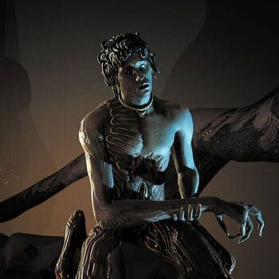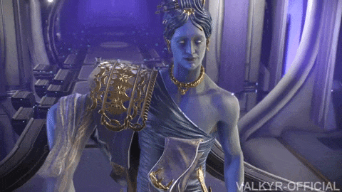
{kind=link}
Ejecutor Ballas.
Años más tarde, cuando la guerra está tornándose fuertemente en contra suya, el Ejecutor Ballas y otros investigadores Orokin tomaron el trabajo de Margulis y lo perfeccionaron, usando a los niños como sujetos que controlasen remotamente desde un "Vínculo Somático" los trajes Warframes. los primeros Warframes en ser creados tienen el prefijo "Prime" lo que significa que su tecnología interna y su apariencia datan de la época Orokin y no han sido alterados, mientras que los accesibles por otras maneras fuera del vacío, son réplicas que tratan de imitar el poder de estas armas.
A partir de aquí las cosas se ponen un poco menos específicas. Los Tenno ganaron la guerra gracias a su poder del Vacío, en un último esfuerzo, los Conscientes enviaron a la hija de Hunhow, Natah, en una forma humanoide para intentar destruir a los Orokin y los Tenno, en cierto momento en el sector Terminus, los Orokin celebraban junto a los Tenno, los adoraban y agradecían por su valentía en la guerra, en un momento abrupto, los tenno se revelaron, asesinando a todos los Orokin presentes e iniciando la caída del imperio, como se puede leer en la entrada de codice de stalker, donde se ve a detalle, ese día.
Después de la Gran Guerra vino el colapso, Natah estaba dispuesta a exterminar a Los Tenno, pero se retractó al Final, los adoptó como si fueran sus hijos y cambio su nombre a Lotus, comprometida a protegerlos, los puso en criosueño durante mucho tiempo, el imperio Orokin, ahora fragmentado se dividió en grandes facciones, los que eran esclavos y obreros descubrieron la clonación y crearon el imperio Grineer, bajo la direcciòn de las reinas gemelas y los que eran la clase baja de los Orokin asumieron el poder comercial y crearon un culto mercante que adoraba la tecnología Orokin, llamado el Corpus, mientras que las criaturas mutadas por el virus Technocyte, ocuparon naves abandonadas conocidas como Derrelictos, accesibles a través de unas llaves fabricables, formando la Infestación, los Conscientes fueron destruidos y otros sepultados en lo más profundo de Urano (Como Hunhow).
Kurias: En el juego, se pueden buscar en los mapas ciertos trofeos llamados Kurias, los cuales van revelando en el codice frases de un poema Grineer escrito a las Reinas.
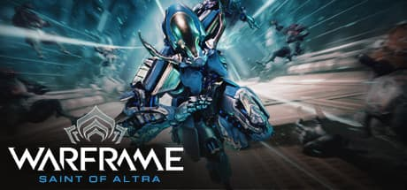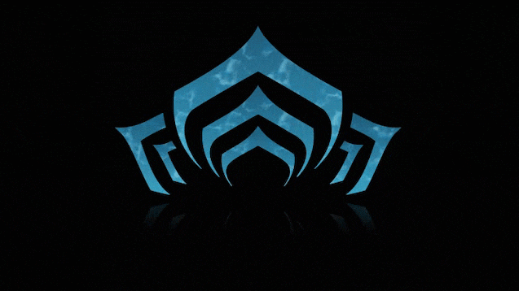
{kind=link}
Era Warframe.
Algún número indeterminado de siglos más tarde, los Corpus son ampliamente considerados como la fuerza que gobierna en la economía y la investigación. Los Grineer lucharon contra los Corpus por el poder y comprar la tecnología de ellos para apoyar sus cuerpos constantemente degradantes por la clonación (síndrome del clon defectuoso). En un momento, la infestaciòn casi había conquistado algunos de los planetas del sistema de origen, pero han sido empujados de vuelta a sus orígenes en las naves Derrelicto. recientemente habían conquistado Eris, además del brote ocasional en planetas habitados. Todo lo que queda de la Orokin son la tecnología Prime, armas olvidadas o bien construidos o tenido una mano en la construcción, y las torres en una zona peligrosa conocida como el Vacío, la cual tiene una IA que controla mentalmente a todos los que entren sin permiso a la torre, formando ejércitos de corruptos, dispuestos a dar su vida por las torres, olvidando todo su pasado antes de entrar a la torre.
Los Tenno fueron despertados por Lotus , sin recordar nada de su pasado. Muchos Tenno que despertaron del criosueño ya llevaban un Warframe y Lotus les informa cómo utilizarlo. Se encuentran a continuación sueltos sobre el sistema solar, ya sea solos, en parejas, o en pequeños escuadrones, los cuales abordan una amplia variedad de misiones designadas por Lotus para mantener el equilibrio entre los Grineer y Corpus o para sofocar levantamientos infestados. Algunos Tenno también apoyan a los Grineer o Corpus como mercenarios para pago.
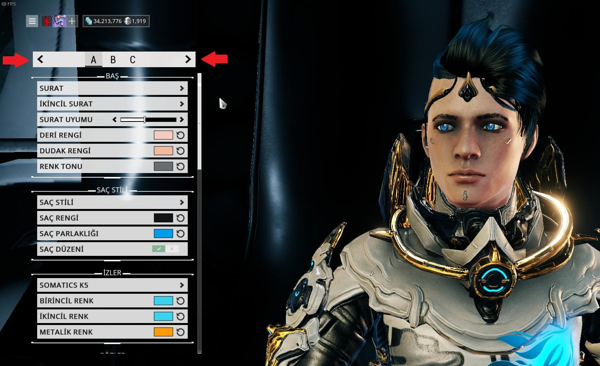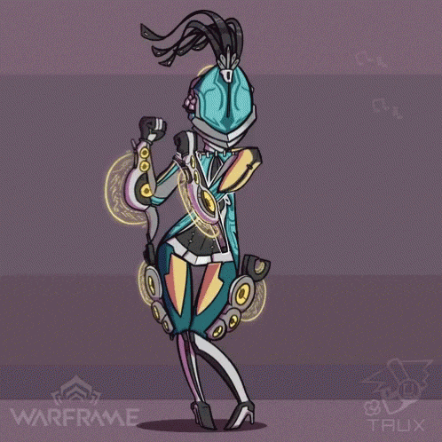
El despertar de los tenno fue intentado de opacar varias veces, tanto corpus como grineer intentaron tomar parte de su tecnología, siendo los corpus los que más éxito tuvieron con el Proyecto Zanuka (Manejado por Alad V), el intento de "El Sargento" de vender a comerciantes criocapsulas tenno, mientras los grineer crearon las Fomore Balor, proyecto liderado por el consejero Vay Hek para atacar estaciones tenno ubicadas en órbitas de varios planetas, las Fomore Balor son grandes naves que atacan objetivos específicos, cada nave está protegida por dos generadores de escudo externos y uno en el núcleo, su debilidad es la irradiación de isótopos omega en el planeta en el que se encuentre, siendo estos el punto débil de su núcleo.
{kind=link}
Los tenno se movilizan en Naves llamadas Liset (se pueden construir otras dos que ofrecen diferentes apoyos) Naves de tamaño pequeño que tienen capacidad de camuflaje en espacio abierto, la Inteligencia Artificial a bordo es llamada Ordis, la cual según el tipo de nave puede ayudar a los tenno en sus misiones, sea bombardeando un lugar específico, lanzando cápsulas de salud o hackeando sistemas de seguridad enemigos, en cuanto a su estado, años de abandono y manipulación grineer han alterado sus comportamientos, puede comportarse de manera errática o estùpida en ciertas situaciones y líneas de dialogo.
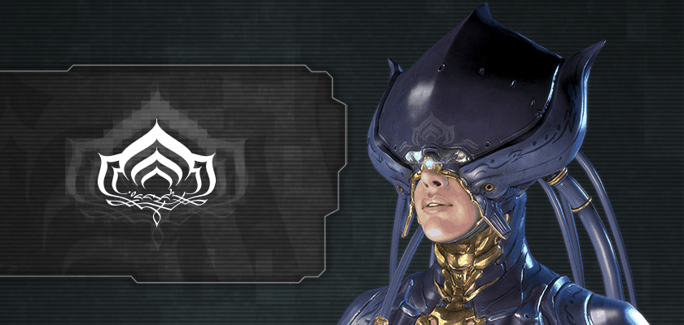 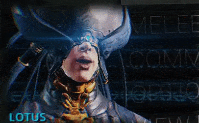
{kind=link}
Lotus.
Lotus es la persona que guía a los Tenno en sus misiones, transmitiendo desde una ubicación desconocida, proporciona información del lugar de la misión, así como niveles de seguridad, Bloqueos y enemigos aproximándose. El icono de Lotus se ha empleado desde el comienzo de la plaga Technocyte en Dark Sector, en Dark Sector como un medio para identificar los mercados negros. La continuidad de este logotipo es misterioso, pero parece ser un fijo en la cultura Tenno como la mayoría de Warframes lo soportan.